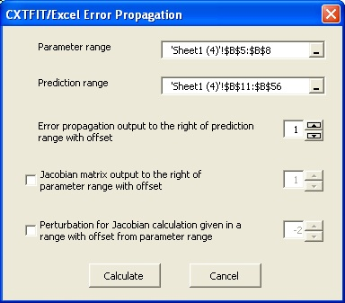

Section 5: Error Propagation
Suppose that we are interested in assessing the uncertainty for the prediction of B breakthrough at a distance of 50 cm. The velocity is 50 cm/h. The retardation factor with a standard deviation of 0.2 in addition to the estimates from Section 3 is used for model prediction (Fig. 5.1).- Make a copy of Sheet1 and set up the problem like Fig. 5.1
- Open Propogate dialog
- Calculate prediction uncertainty
- Calculate the approximate prediction confidence interval
Select menu CXTFIT->Propagate to open the Propagate dialog (Fig. 5.2).
Fig. 5.1 Change the parameter range to analyze sensitivity for velocity, dispersion coefficient, and pulse duration.
Select the parameter range and prediction range, change the offset for error propagation to 1, and click Calculate (Fig. 5.2). The error propagation from the parameters to the predictions is output next to the prediction range (Fig. 5.3).

Fig. 5.2 Change the parameter range to analyze sensitivity for velocity, dispersion coefficient and pulse duration.
Assume that the average error of the calibrated model is 3% (RMSE = 0.03 in cell F1), a rough approximation of the standard deviations for the predictions is calculated in column D by typing in the formula =SQRT(C11+$F$1^2) in cell D11, double click on the right left corner of cell D11 to extend the formula.
Assume that the value of t is 2.0 (2.0 in cell F2), type in the formula =B11-$F$2*D11 in cell E11, double click on the right left corner of the cell; type in the formula =B11+$F$2*D11 in cell F1, double click on the right left corner of the cell. The confidence band is plotted against the prediction in Fig. 5.3.
Fig. 5.3 Prediction uncertainty assessment results